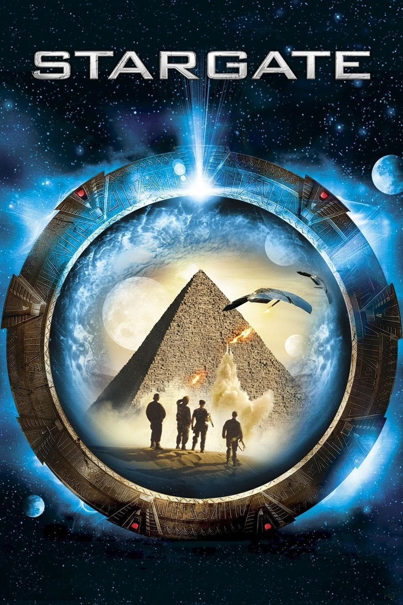

Мировая премьера: 28 октября 1994
Слоган: Звёздные Врата унесут вас за миллион световых лет от дома.
Сюжет: Когда загадочная женщина делает профессору Дэниелу Джексону предложение, от которого невозможно отказаться, он оказывается на секретной военной базе. Его задача – расшифровать иероглифы на древнеегипетском артефакте, известном как Звёздные Врата. Перевод раскрывает предназначение Врат – это инопланетный портал для путешествий в далёкие миры. Руководителем первой экспедиции через Врата назначают полковника Джека О'Нила – закалённого военного с железными нервами и тяжёлым прошлым, которого специально возвращают на службу ради этой миссии. Пройдя через таинственный портал, команда попадает на пустынную планету в другом конце Вселенной, где их ждёт встреча с могущественным богом солнца Ра. Теперь на кону не только свобода древней цивилизации, веками жившей в рабстве, но и единственный шанс участников экспедиции вернуться домой.
Режиссёр: Роланд Эммерих
В ролях: Джеймс Спэйдер, Курт Расселл, Вивека Линдфорс
| Джеймс Спэйдер | Доктор Дэниел Джексон |
| Курт Расселл | Полковник Джек О'Нил |
| Вивека Линдфорс | Кэтрин Лэнгфорд |
| Алексис Крус | Скаара |
| Джон Дил | Лейтенант Кавальски |
| Эрик Авари | Казуф |
| Джей Дэвидсон | Ра |
| Мили Авитал | Ша'ури |
| Леон Риппи | Генерал Уэст |
| Френч Стюарт | Лейтенант Феретти |
| Карлос Лаучу | Анубис |
| Джимон | Хорус |
| Джанин Лоффлер | Набе |
Бюджет: $ 55 млн.
Кассовые сборы в США: $ 72 млн.
Кассовые сборы в мире: $ 197 млн.
Продолжительность: 2 ч. 4 мин.
Рейтинг: 7.0